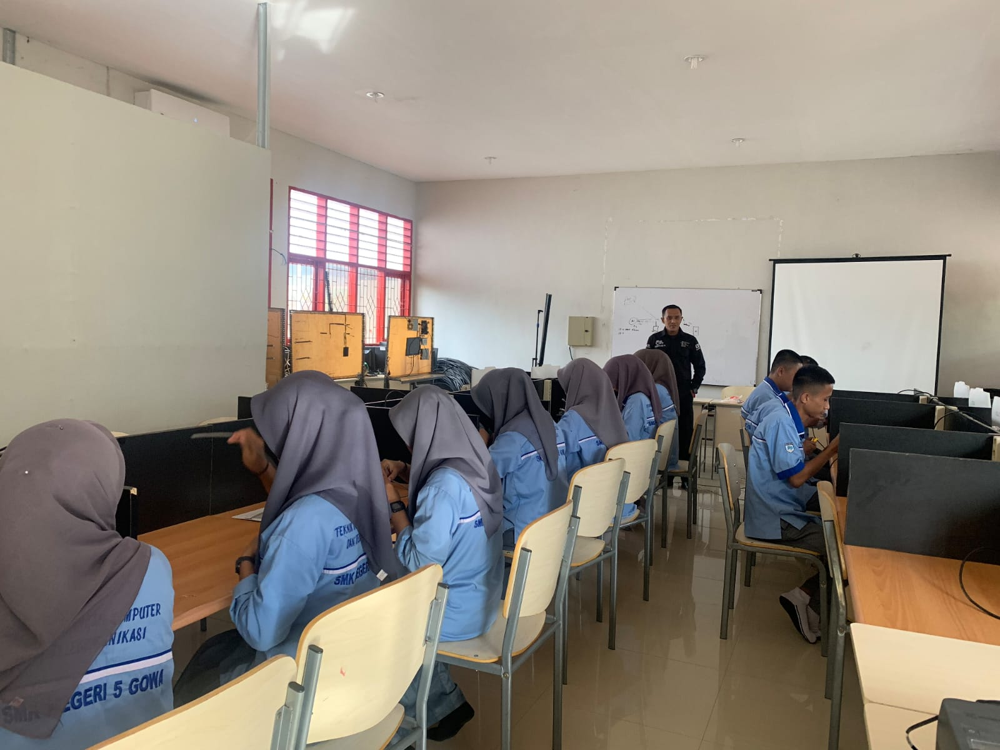
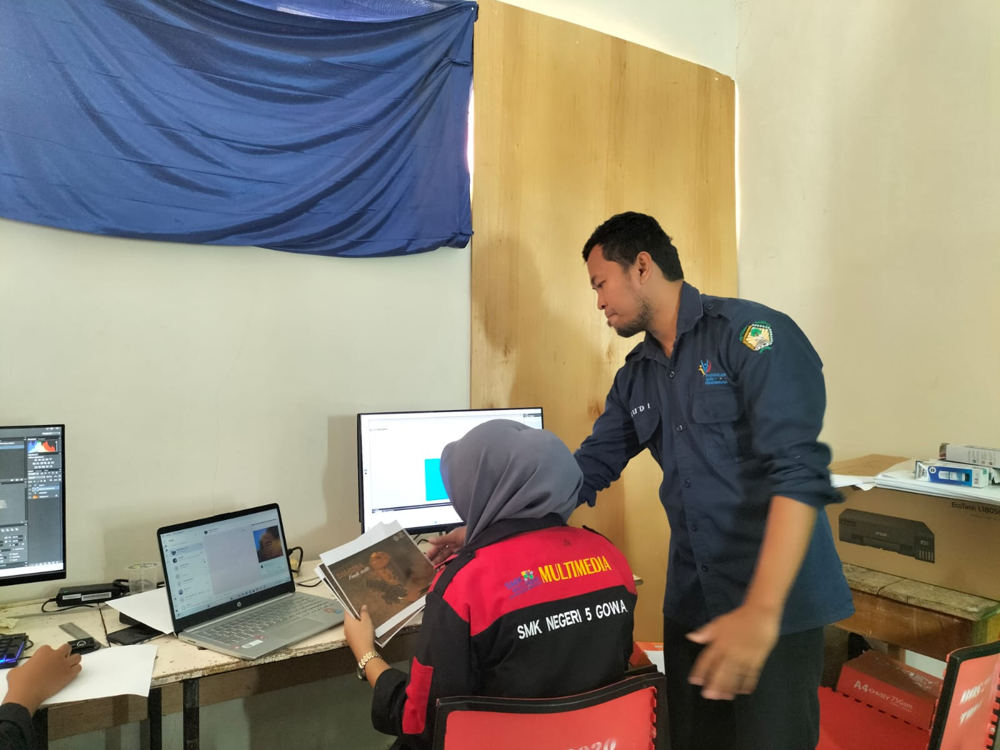
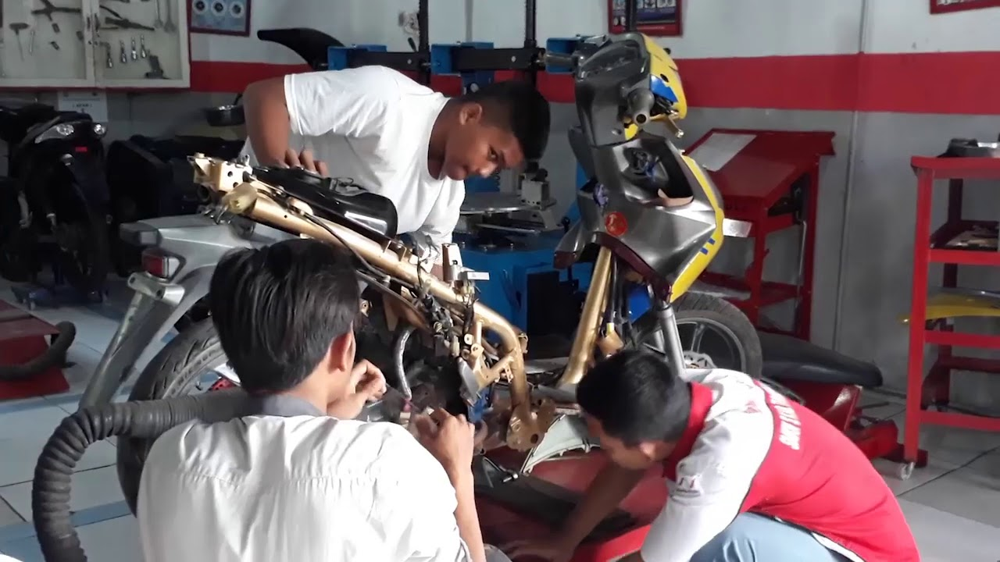
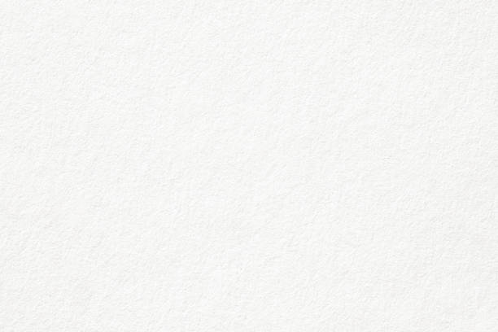
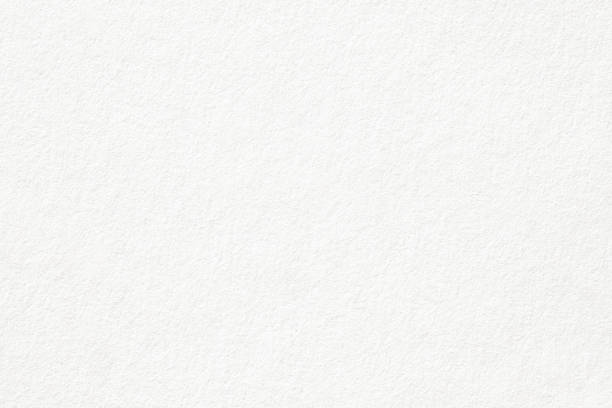
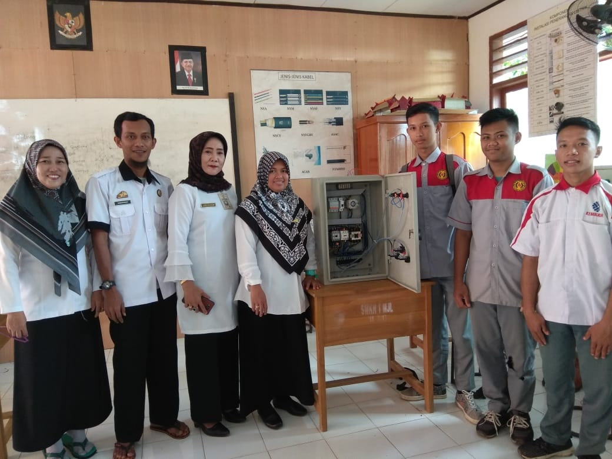
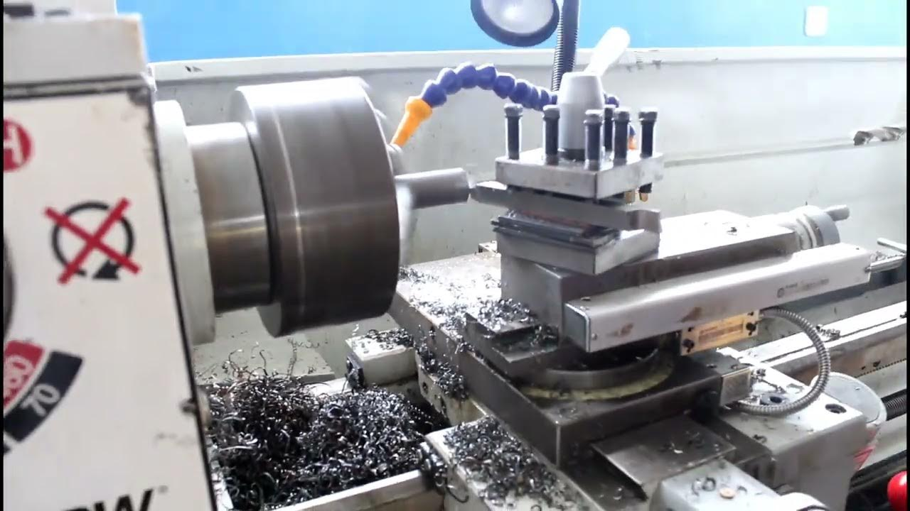

Deskripsi
SMKN 5 Gowa adalah salah satu Sekolah Menengah Kejuruan unggulan di Sulawesi Selatan yang menyediakan berbagai program keahlian seperti Teknik Komputer dan Jaringan, Desain Komunikasi Visual, Teknik Kendaraan Ringan, Kelistrikan, dan Teknik Sepeda Motor. Dengan fasilitas lengkap dan pengajar profesional, sekolah ini berkomitmen untuk mencetak lulusan yang siap kerja, berkompeten, dan memiliki karakter yang baik.
Sekolah ini juga aktif dalam berbagai kegiatan ekstrakurikuler, pelatihan industri, dan kompetisi kejuruan, yang mendukung pengembangan bakat dan potensi siswa secara menyeluruh. SMKN 5 Gowa terus berinovasi dalam memberikan pengalaman belajar terbaik melalui pendekatan berbasis teknologi dan kemitraan dengan dunia industri.
Program Keahlian dan Kegiatan
Teknik Komputer dan Jaringan (TKJ)
Kegiatan Jurusan:
- Praktikum jaringan komputer dan server
- Workshop instalasi sistem operasi
- Pelatihan sertifikasi Cisco dan Microsoft
- Magang di perusahaan IT
- Kompetisi jaringan dan keamanan komputer


Desain Komunikasi Visual (DKV)
Kegiatan Jurusan:
- Praktikum desain grafis dengan Adobe Creative Suite
- Workshop fotografi dan videografi
- Kunjungan studio desain profesional
- Pameran karya siswa tahunan
- Proyek kolaborasi dengan industri kreatif


Teknik Kendaraan Ringan (TKR)
Kegiatan Jurusan:
- Praktikum mesin dan kelistrikan mobil
- Workshop tune-up dan perawatan berkala
- Pelatihan sistem injeksi bahan bakar
- Studi lapangan ke bengkel resmi
- Kompetisi keterampilan otomotif antar-sekolah
 


Kelistrikan
Kegiatan Jurusan:
- Praktikum instalasi listrik rumah dan industri
- Workshop panel listrik dan kontrol motor
- Pelatihan sertifikasi kelistrikan
- Kunjungan ke pembangkit listrik
- Proyek sistem otomasi rumah pintar


Teknik dan Bisnis Sepeda Motor (TSM)
Kegiatan Jurusan:
- Praktikum mesin sepeda motor konvensional dan injeksi
- Workshop diagnosis kerusakan sepeda motor
- Pelatihan manajemen bengkel
- Kunjungan industri ke pabrik sepeda motor
- Kompetisi service sepeda motor